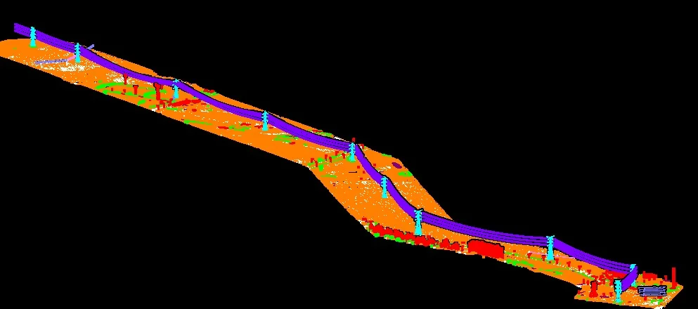

01 · CLEAN
Noise review and preparation
Inspect source files, coordinate reference information, point attributes and obvious outliers before classification begins.

GeoProcess Consulting supports geospatial teams with structured LiDAR processing, classification and deliverable preparation. We work with client-provided point clouds and project specifications to produce organized datasets that downstream GIS, utility, corridor and engineering teams can use.
LiDAR processing quality affects every downstream product. A few classification errors can flow into terrain models, asset extraction and corridor decisions. Our workflow applies repeatable processing steps and review checks to help keep the outputs consistent with the agreed specification.
Inspect source files, coordinate reference information, point attributes and obvious outliers before classification begins.
Classify points into the project-required classes, which may include ground, low/medium/high vegetation, buildings, power lines and other infrastructure.
Prepare classified LAS/LAZ, DTM/DSM products, feature layers or QA reports according to the project scope.
Platform, altitude, scan geometry and project conditions affect what a point cloud captures. GeoProcess Consulting processes client-provided datasets and aligns the outputs to the project specification.
LiDAR mounted on a crewed aircraft or helicopter. ALS is suited to regional terrain mapping, forestry, watersheds and long corridors because it covers large areas efficiently. Multiple returns can record canopy and, where laser pulses pass through gaps, ground points beneath vegetation.
A laser scanner carried by an unmanned aerial vehicle. Flying closer to the target can produce dense, detailed point clouds for sites with complex terrain, embankments, stream banks, construction areas and vegetation structure. Density is mission-specific; values above 100 points/m² and higher are possible on some systems, but are not a universal guarantee.
LiDAR carried by a moving ground platform such as a vehicle, backpack or handheld rig. MLS is particularly useful for streets and transport corridors, capturing road assets, façades, signs, poles, trees and roadside structures from a ground-level viewpoint.
ALS, UAV-LiDAR and MLS data have different viewpoints and coverage patterns. We review the supplied data, coordinate reference, required classes, intended DTM/DSM or feature outputs, and acceptance criteria before production.
Illustrative outputs from related geospatial workflows. Final deliverables are agreed to the project specification.


Final classification classes, accuracy tolerances, software formats and acceptance criteria are agreed against the client’s specification before production.